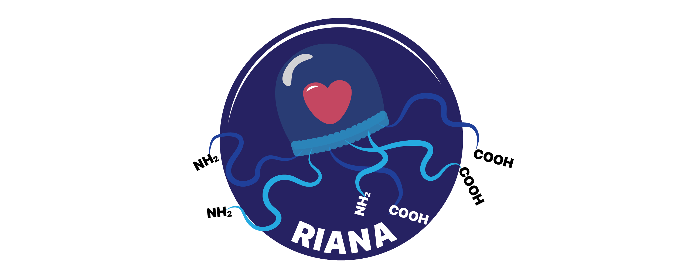
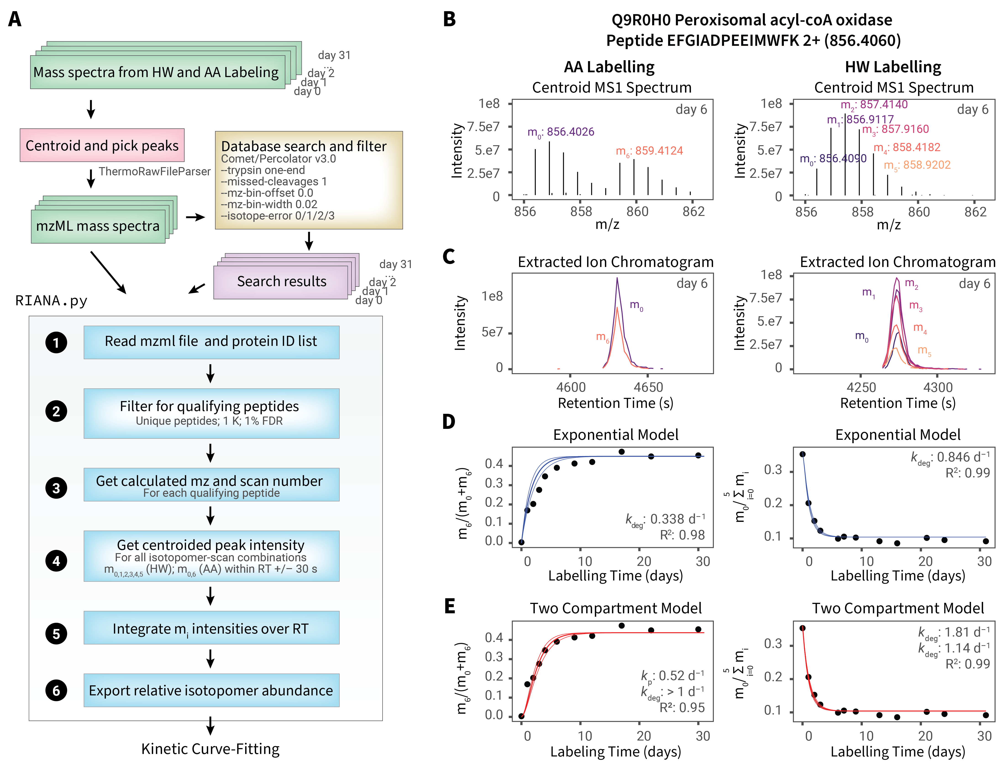

RIANA - Relative Isotope Abundance Analyzer
- Edward Lau Lab, University of Colorado School of Medicine
- Maggie Lam Lab, University of Colorado School of Medicine

About RIANA
RIANA (Relative Isotope Abundance Analyzer) is a software to automate the analysis of mass spectrometry- based protein turnover measurement experiments.
RIANA is written to be flexible to accommodate different protein stable isotope labels, including heavy water (D2O) and SILAC (e.g., 13C6-lysine or other amino acids) experiments.
RIANA supports a Snakemake pipeline that uses other existing tools in the community, requiring only mass spectrometry data files (.mzML) as input to perform database search, post-processing, peak integration, and output of best-fit kinetic rate constants.

Downloads
Latest Updates
v.0.7.1
- Added parameter for mass defect -D to command line argument for riana integrate. See documentation for detail
- Added the flag -p to the command line argument for riana fit, which toggles plotting fitted curves
- Added the fag -w to the command line argument for riana integrate, for writing out pre-integration intensities
See Change Log for details.
The latest version and source code of RIANA can be found on github: https://github.com/ed-lau/riana.
See the Quick Start and Documentation for instructions.
Contributors
- Edward Lau, PhD - ed-lau
Citations
- Harmonizing Labeling and Analytical Strategies to Obtain Protein Turnover Rates in Intact Adult animals. Hammond DE, Simpson DM, Franco C, Wright Muelas M, Wasters J, Ludwig RW, PRescott MC, Hurst JL, Beynon RJ, E Lau Molecular & Cellular Proteomics 2022, 100252 doi:10.1016/j.mcpro.2022.100252